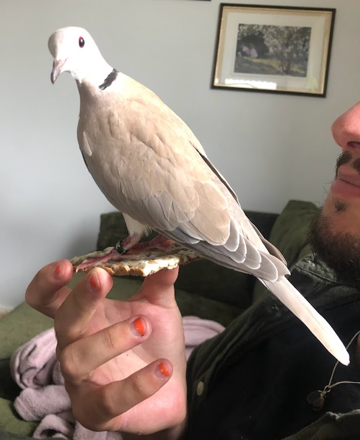

I'm slowly getting used to my new life. For at least the past eight years, my life has been very unpredictable. I've noticed that this isn't really the case in the same way when you have a full-time job, and I kind of enjoy that. Knowing that you'll have work between, let's say, 8 AM and 4 PM, Monday to Friday, every week, removes a lot of the stress I've experienced before. My life is now more based around set routines, which feels much healthier.
What are you doing?
This is a now page. If you have your own site, you should make one, too!
My life is often busy, and I've been somewhat secretive when sharing details with family and friends. I thought this would be a great way to keep everyone updated on what I'm currently doing. I'll do my best to keep this page updated with any new happenings. Thank you, Phillip Ridlen, for inspiring me with your now page!
This was what I was doing as of March 31 2025
This was what I was doing as of February 28 2025
This is what I am doing now
Life 🌟

Education 🎓
I had my final master's thesis presentation, and I was the most nervous I've ever been in my whole life, I think. I prepared a lot for the presentation, and hopefully, it paid off. There were a lot of people attending, which made me even more nervous. But of course, I'm very flattered that people wanted to come. My examiner even told me it was unusual for so many people to attend.
Anyway, I think things went well. My opponent was very sweet — almost too sweet. I would have liked more criticism from her. I was prepared to get roasted! Writing scientific articles is not my strong suit. However, I'm really happy about the comments she gave me.
Now, the only thing I have left before I can request my diploma is to do the opposition work on her thesis.
Work 💼
At Opera, a lot of interesting things are happening. For instance, we just implemented a new design system for the project I'm working on, so there will be a lot of UI programming in the near future—which I enjoy!
Also, for the first time in my life, I've experienced what's called Impostor Syndrome, where I've been doubting my programming skills. Maybe this is normal right after "graduating", especially in the field I'm in — idk. Previously in life, I think I've mostly been around people where I was usually the one with the most programming experience. However, now I mostly work with senior developers (at least in comparison to me).
I've been kind of disappointed in myself, since I know I can perform better than I currently do. Moving forward, I'll be more precise in my work and also try to be less hard on myself. Maybe it's healthier to assume things are going well until someone tells you they aren't.
Anyway, I enjoy my job and my colleagues, and I think I've integrated well with the team— despite this impostor feeling.
Organizations 🏢
My ethical hacking organization arranged our main event, LiU CTF, which I'm happy to declare a success. Thirteen teams competed, trying to solve our 40 custom-made cybersecurity challenges. There were no major technical difficulties, and most people stayed for the entire duration of the event. Most importantly, we learned a lot, and next year's event will hopefully turn out even better! Now we'll take a short break, and in April we'll hold a lecture where we show people how to solve the remaining unsolved exercises.
As Editor-in-Chief of LiTHanian, we're wrapping up our third magazine. This sprint has been more time-consuming than usual, since we're doing investigative journalism this time around. That means we've been conducting a lot of interviews, transcribing them, and letting the organizations we're reviewing fact-check our articles to avoid publishing incorrect information. The remaining work is mostly layout, and after that, we'll start preparing for our final issue, which will be about the local university's 50th anniversary.
Hobby Projects ⚙️
For me, having hobbies outside of studying and working is very important. My main hobbies are programming, photography, music, and writing.
When it comes to programming, I haven't found the time to do any hobby projects. I've mostly been developing challenges for the CTF event and thinking about things I want to build. Hopefully, things will calm down soon, and I'll be able to focus on personal projects again.
In terms of photography, I've literally only taken three photos in total during all of March. One was of the winning team at the CTF event, one was of a friend I went on a walk with, and the last was of my family — since we gathered for my birthday, which is rare. Not taking more pictures is very unusual for me, and that needs to change. What's even weirder is that it feels like my interest in photography actually peaked this month, so I can't understand why I didn't take more photos.
Once again, I haven't been writing much lately, aside from article work. But I have a few ideas I'm really excited about! I'll probably talk more about them in a few months.
Expert Progress 📈
The concept of reaching 10,000 hours to become a professional or an expert in a field is derived from Malcolm Gladwell's book "Outliers: The Story of Success" Gladwell popularized the idea that achieving a high level of proficiency in any field typically requires about 10,000 hours of dedicated practice. This notion is based on the research of psychologist Anders Ericsson, who studied the practice habits of elite performers in various domains.
I've been tracking my programming time since 2019, so these numbers are based on that data. The actual total is likely higher, considering I wrote my first program in 2012! Please note that I include this jokingly; I don't necessarily believe in the idea of becoming an expert after 10,000 hours. I haven't given it much thought, and I certainly don't feel like an expert yet.